Office Outrage
PROTOCOLO DE REBELION: ACTIVO
SINOPSIS DEL JUEGO
Office Outrage es un videojuego beat ’em up de desplazamiento lateral en 2D con estética pixel art, en el que el jugador controla a John, un oficinista agotado que, tras recibir un correo urgente del CEO un viernes a las 5:00 PM, decide abrirse paso por 10 pisos de una megacorporación para enfrentarlo cara a cara.
A lo largo del recorrido utiliza suministros de oficina como armas, café como potenciador y su propia furia acumulada para sobrevivir a un entorno laboral absurdo, opresivo y satírico.
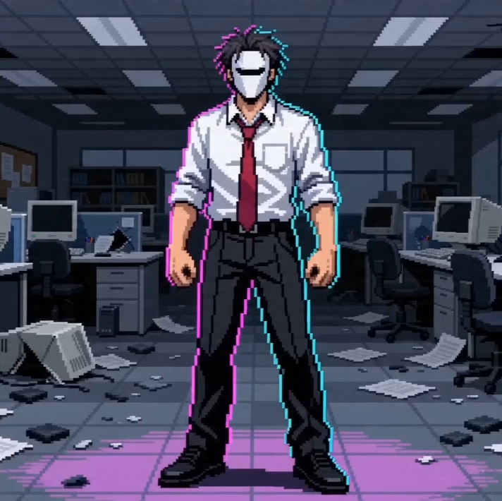
ESPECIFICACIONES TÉCNICAS: NIVEL 1
"Lunes de Reportes"
Descripción General
Inspiración: El caos burocrático y la sensación de iniciar una semana saturada. Basado en el "laberinto de cubículos".
Tema: Acción introductoria / Tutorial. Enfoque en enseñar las bases del combate y el ritmo del juego.
Contexto Narrativo
Ocurre tras recibir el correo del CEO. Representa el primer paso de la rebelión de John contra la cultura corporativa.
Estilo Visual y Sonoro
- Paleta "Neón Corporativo" (Azul oscuro, grises, blanco hueso).
- Ambiente: Teléfonos sonando, impresoras, zumbidos fluorescentes.
Objetivos del Jugador
- Principal: Derrotar enemigos en Ventas y barrera de impresoras.
- Secundarios: Taza de "El Mejor Empleado".
- Derrota: Estrés al 100%.
Bitácora de Desarrollo
SEGUIMIENTO SEMANAL DE PROGRESO
Semana 7: Definición del Proyecto
En clase se seleccionó el GDD del compañero Juan Andrés Escobar Castillo como base del proyecto. El equipo analizó el concepto, el perfil del juego y referencias de interfaz para definir la dirección estética y mecánica.
Además, se realizó una investigación del género beat ’em up y se desarrolló un primer prototipo funcional con movimiento del personaje.


Semana 8: Diseño del Nivel 1 y Mejora de Mecánicas
El equipo diseñó un documento detallado que define todos los aspectos del nivel 1. En este documento se especifican los elementos visuales, diagramas de flujo y mecánicas del nivel "Lunes de Reportes".
Además, se logró un primer acercamiento a la interfaz de inicio. Los botones y la configuración básica ya están implementados, y se ha mejorado el movimiento del personaje. El enemigo ahora sigue al jugador con mayor precisión e interactúa mejor con el entorno, aprovechando el espacio disponible entre cubículos (lo que se conoce como control del espacio en beat 'em ups).
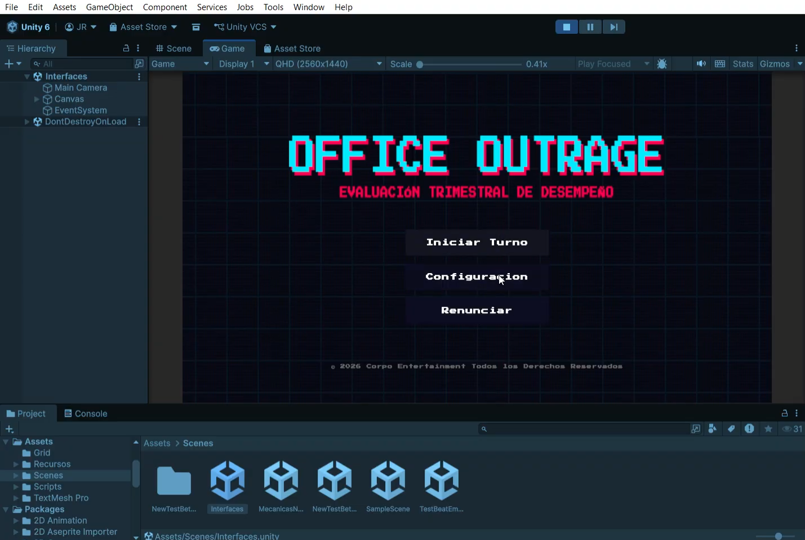
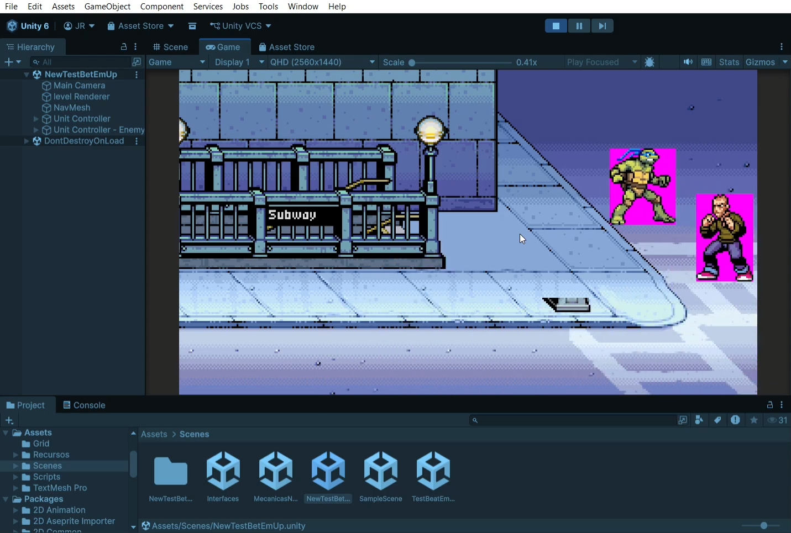
Semana 9: Búsqueda de Assets y Definición Visual
Durante esta semana el equipo se enfocó en la búsqueda y selección de assets para los personajes y entornos del juego. Se exploraron diferentes estilos de pixel art con el objetivo de mantener coherencia visual con la estética “neón corporativo”. La tarea fue dificil, al punto que el equipo tuvo que crear algunos assets personalizados para asegurar que el estilo gráfico se mantuviera uniforme en todo el juego.
s Se recopilaron referencias para John (personaje principal), sus animaciones y elementos visuales del entorno como oficinas y cubículos. Este proceso permitió definir una base gráfica sólida para la implementación futura dentro del juego.
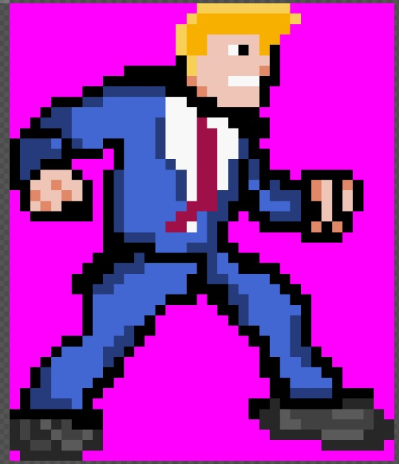
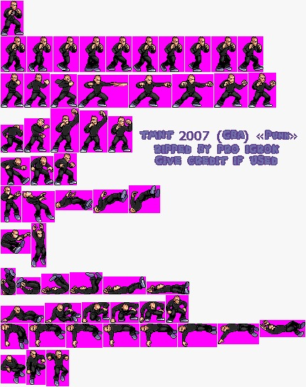
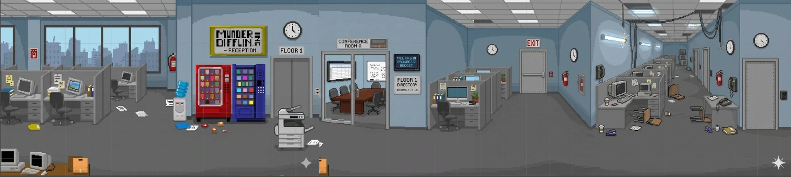
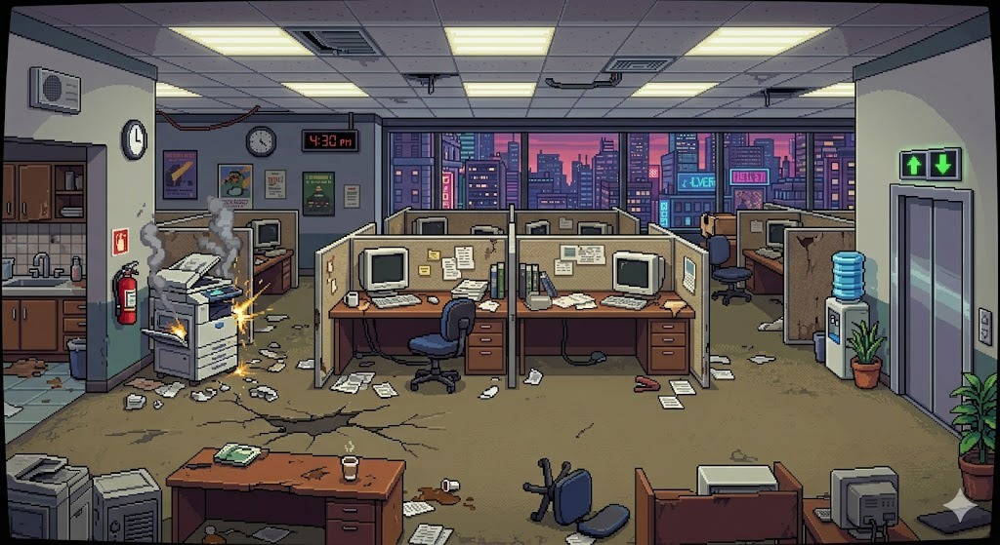
Semana 10: Definición de Sprites y Creación de Clips para teaser
En esta semana se logró la definición final del sprite del personaje principal, incorporando elementos visuales clave como la máscara, lo que refuerza la identidad del juego y su tono narrativo. Además, se trabajó en el diseño y selección de sprites de enemigos, buscando coherencia estética y claridad en pantalla.
Paralelamente, se inició la creación de clips de gameplay y generados con IA que servirán como base para el teaser del proyecto. Estos clips capturan momentos clave del juego y serán utilizados en la edición del video de presentación de la semana 11.
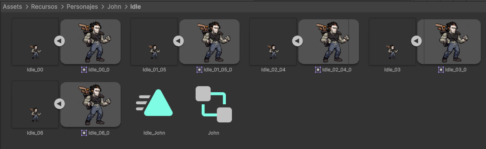
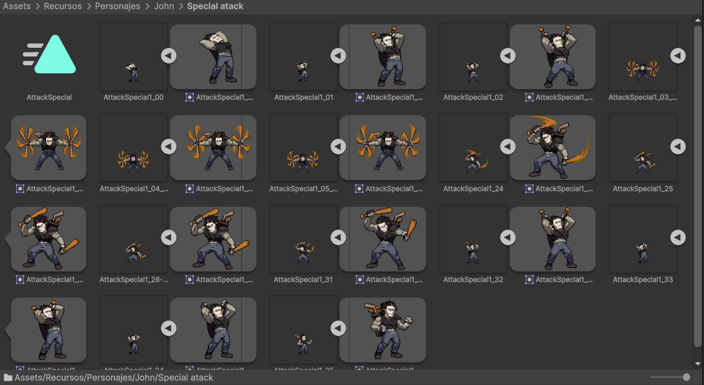

Semana 11: Producción del Teaser
Durante esta semana se realizó la producción del teaser oficial del juego, con el objetivo de comunicar la esencia de Office Outrage y captar la atención del público desde los primeros segundos.
El teaser combina fragmentos de gameplay, piezas visuales generadas con apoyo de IA y elementos narrativos que introducen la historia del protagonista. Se buscó construir una experiencia dinámica y atractiva, resaltando el tono, estética del juego y generando interés por su desarrollo.
Semana 12: Implementación de Combos y Nuevas Mecánicas
Durante esta semana se implementaron nuevos sistemas de combate, incluyendo combos especiales y ataques adicionales para el personaje principal. Estas mejoras permiten una experiencia de juego más dinámica, dando mayor profundidad al enfrentamiento contra los enemigos.
Asimismo, se integró una mecánica de progresión en el nivel, donde el mapa se va desbloqueando a medida que el jugador derrota a los enemigos. Esto refuerza el ritmo del juego y guía al jugador a través del escenario de manera más controlada y estratégica.
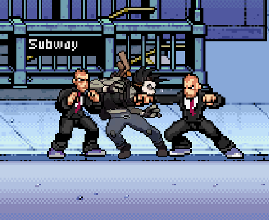
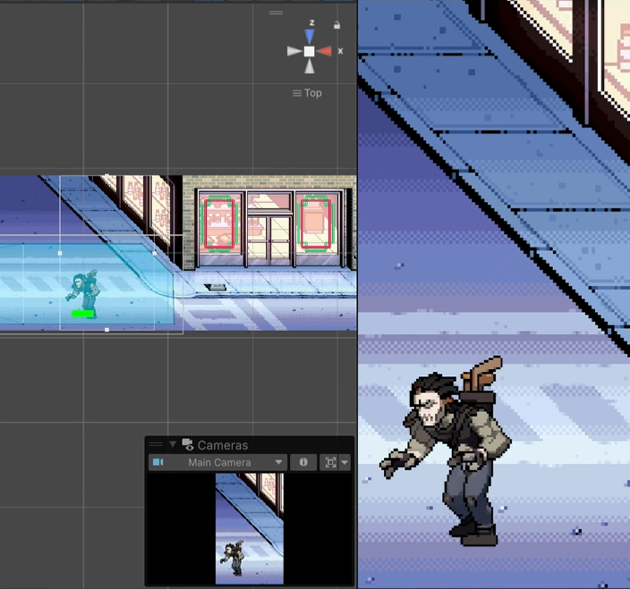
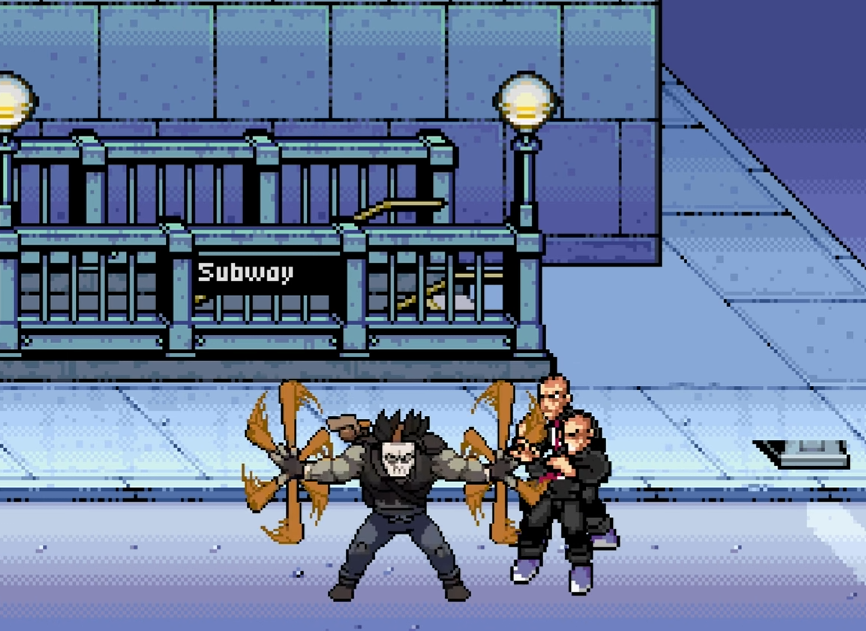
[ CONTINUARÁ... ]